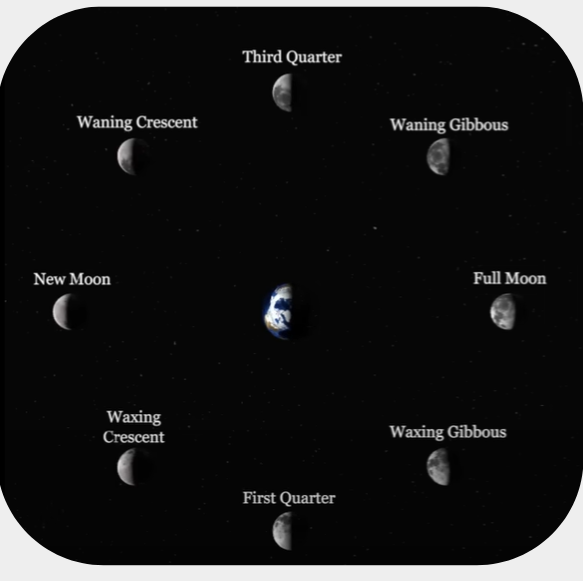
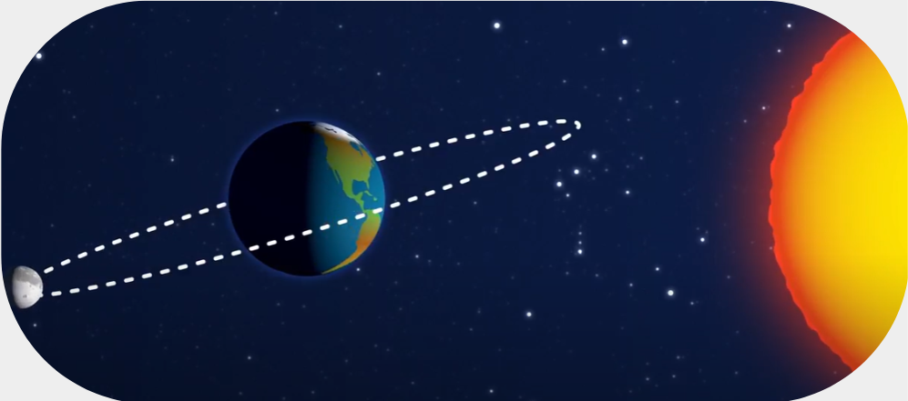

Você conhece as 8 FASES DA LUA?
https://youtu.be/fIvZW5q84uM?si=-p4S75d_72COWLKWEclipse Solar e Eclipse Lunar
https://youtu.be/fIvZW5q84uM?si=-p4S75d_72COWLKWFases da Lua
https://youtu.be/fIvZW5q84uM?si=-p4S75d_72COWLKWEclipses: solar e lunar | Ciências 5º ano
https://youtu.be/fIvZW5q84uM?si=-p4S75d_72COWLKWPaxi e a nossa Lua: fases e eclipses
https://youtu.be/fIvZW5q84uM?si=-p4S75d_72COWLKW

